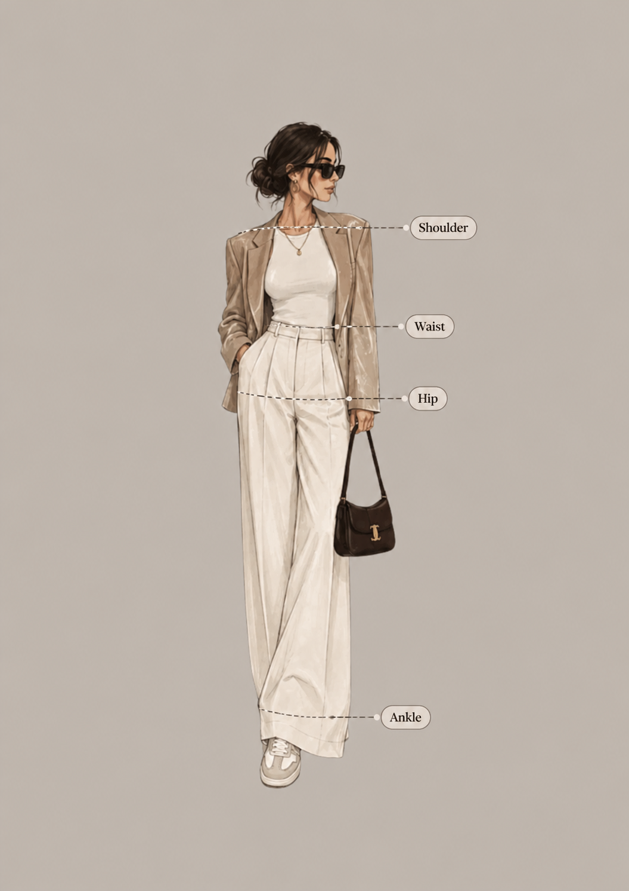

Body shape check
Masukkan ukuran yang kamu punya untuk mendapatkan perkiraan kategori proporsi tubuh.
Ruang kecil untuk mengenali proporsi tubuh dan menemukan inspirasi outfit yang terasa nyaman, percaya diri, dan tetap jadi diri sendiri.

Setiap tubuh punya proporsi yang berbeda. Tidak ada bentuk yang lebih baik dari yang lain.
EST. FOR EVERY BODYBeberapa langkah sederhana untuk menemukan referensi gaya yang lebih personal.
Masukkan ukuran yang kamu punya untuk mendapatkan perkiraan kategori proporsi tubuh.
Lihat ide padu padan yang bisa kamu adaptasi sesuai selera, aktivitas, dan kenyamanan.
Simpan hasil analisis di perangkat ini dan kembali kapan pun tanpa kehilangan progres.
Clothes are a way to express yourself.
Not a way to change yourself.
Isi ukuran yang kamu ketahui. Hasilnya berupa perkiraan kategori proporsi, bukan penilaian tubuh atau standar ideal.
Pilih cara yang paling nyaman. Keduanya hanya memberi perkiraan untuk eksplorasi styling.
Ide outfit berdasarkan kategori proporsi dan preferensi styling. Ambil yang kamu suka, mix, match, dan buat versimu sendiri.
Pilih satu set untuk melihat foto outfit utama dan detail item yang melengkapinya.
Mix, match, and make it yours. Setiap foto adalah inspirasi. Kamu bisa mengganti atasan, bawahan, atau outer sesuai selera dan kenyamananmu.
Kenali cara kerja fitur dan arti setiap kategori secara sederhana.
Area pinggul cenderung lebih lebar dibanding area dada/bahu.
Ide: coba atasan bertekstur, kemeja, atau bawahan dengan potongan yang kamu sukai.Ukuran dada dan pinggul relatif seimbang dengan pinggang yang lebih kecil.
Ide: eksplorasi atasan fitted, wrap top, atau setelan yang mengikuti preferensimu.Area bahu/dada cenderung lebih lebar dibanding area pinggul.
Ide: coba bawahan berpotongan lurus, wide-leg, atau detail yang kamu suka.Ukuran dada, pinggang, dan pinggul relatif berdekatan.
Ide: layering, outerwear, atau permainan tekstur bisa jadi opsi menarik.Area atas dan bawah relatif seimbang, tanpa satu area yang sangat dominan.
Ide: banyak potongan bisa dieksplorasi, dari setelan simpel sampai layering.BodyRaa membandingkan lingkar dada dan pinggul terlebih dahulu. Jika selisih relatifnya lebih dari 5%, hasilnya Pear (pinggul lebih besar) atau Inverted Triangle (dada lebih besar). Jika selisihnya maksimal 5%, sistem menghitung rasio pinggang terhadap rata-rata dada dan pinggul: ≤0,75 diperkirakan Hourglass; >0,75 sampai <0,82 Balanced; dan ≥0,82 Rectangle. Lebar bahu hanya menjadi informasi tambahan karena tidak sebanding langsung dengan ukuran lingkar.
Ambang tersebut merupakan aturan praktis yang dipakai website untuk memberi perkiraan, bukan standar ilmiah universal. Hasil bukan diagnosis, bukan ukuran kesehatan, dan tidak menentukan outfit yang “boleh” kamu pakai.
Jika hasil terasa kurang sesuai, periksa kembali cara pengukuran atau pilih kategori yang paling terasa cocok untuk eksplorasi style.